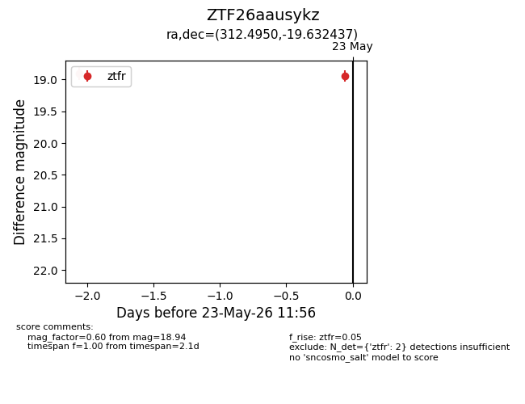
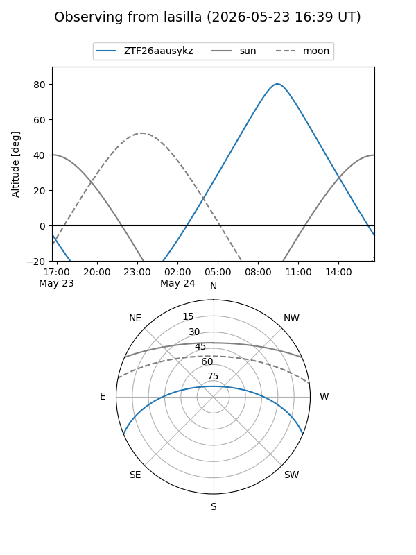
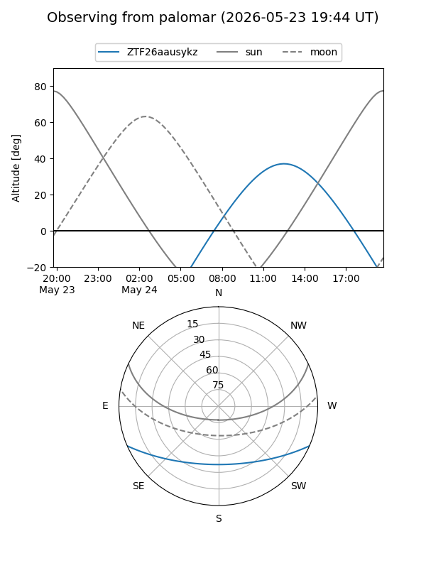
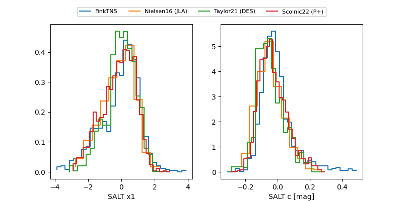

ZTF26aausykz
Target ZTF26aausykz at 2026-05-23 11:58
Aliases and brokers:
lsst-FINK: link
lsst-Lasair: link
lsst-ALeRCE: link
ztf-FINK: link
ztf-Lasair: link
ztf-ALeRCE: link
alt names
ZTF26aausykz (ztf,fink_ztf)
Coordinates:
equatorial (ra, dec) = 312.4950,-19.63244
equatorial (HMS+DMS) = 20:49:58.79,-19:37:56.77
galactic (l, b) = (26.8897,-34.59014)
Flags:
Photometry:
last ztfr=18.94
2 ztfr detections
Lightcurve

Visibility


Additional plots
